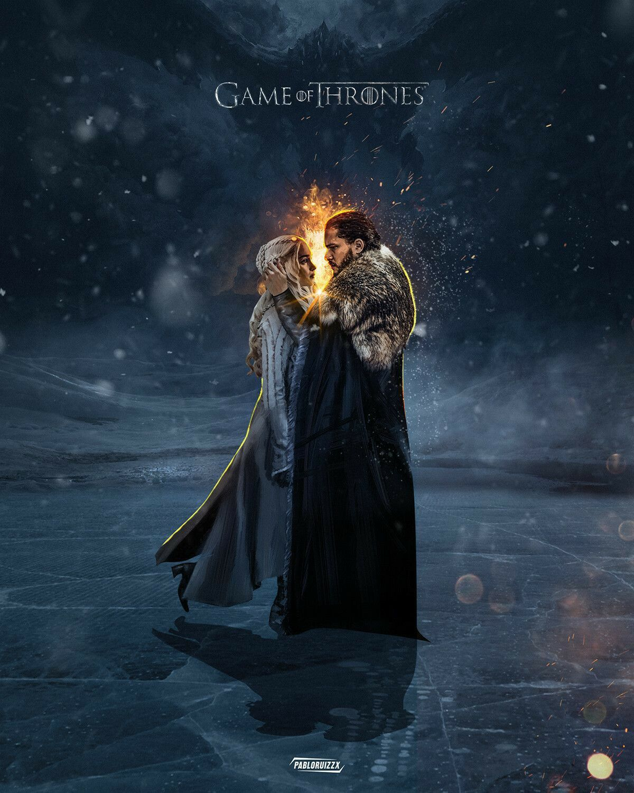
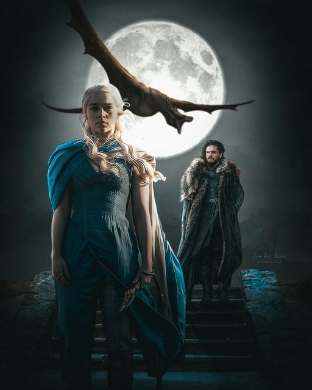
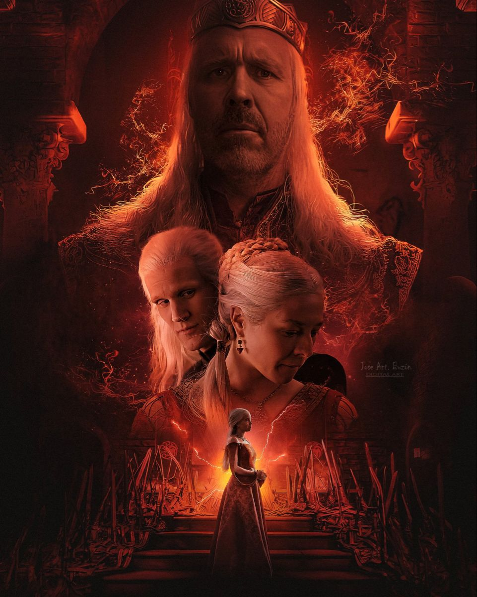
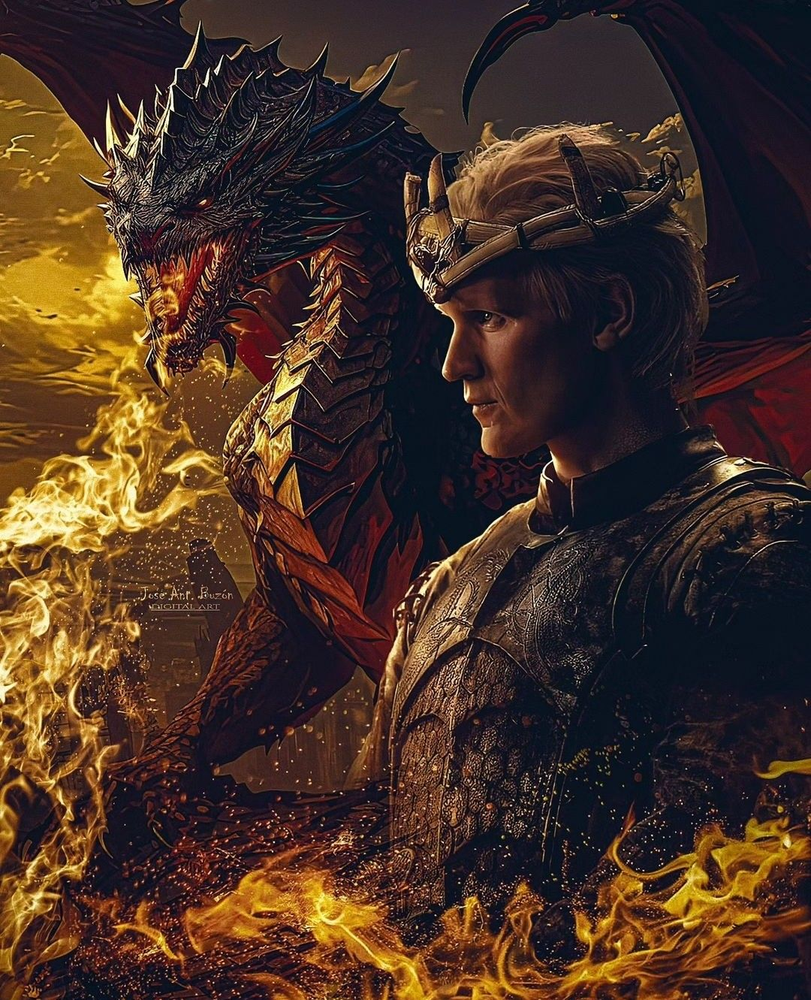
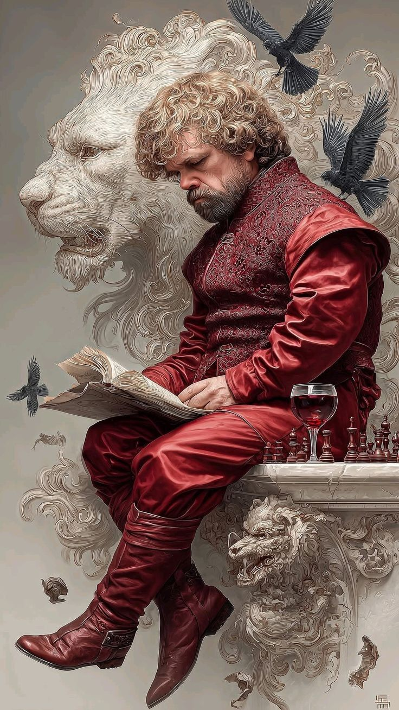
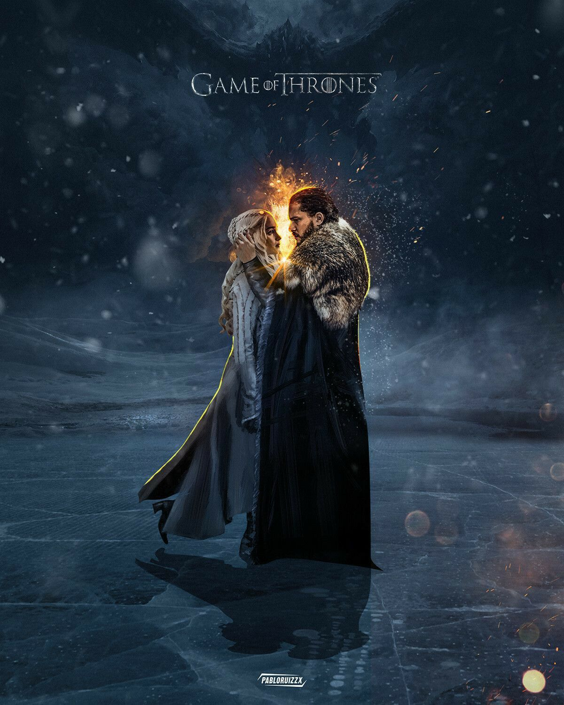
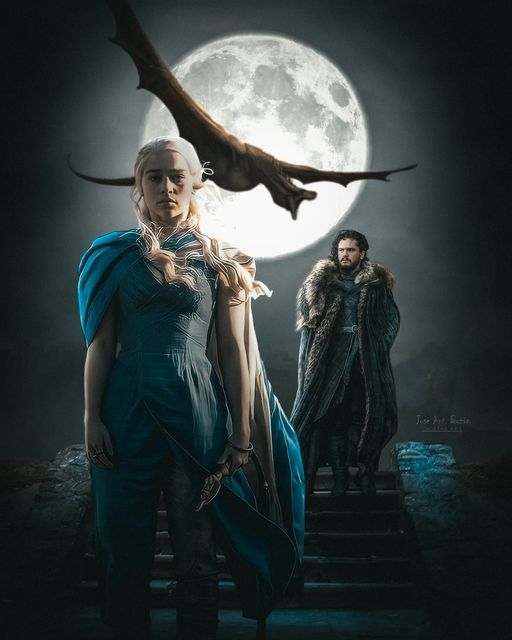
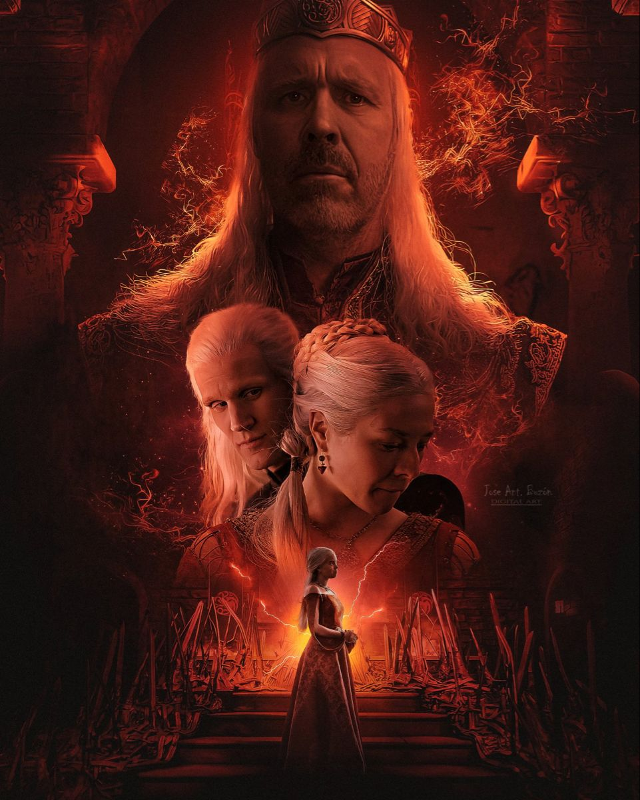
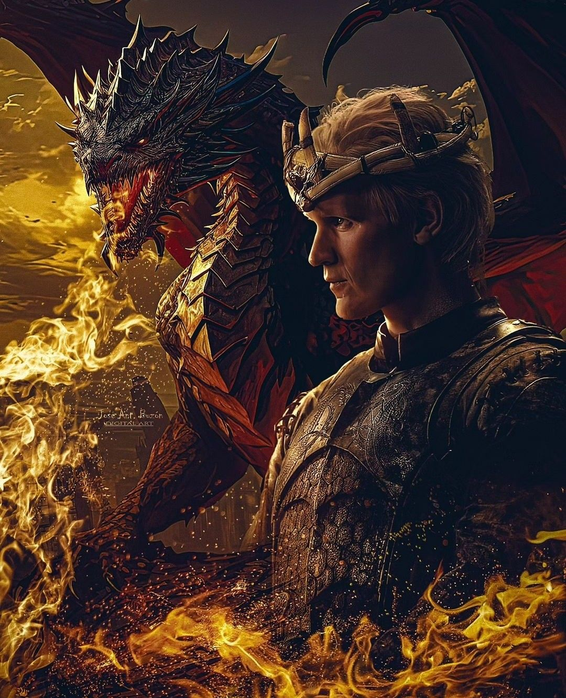
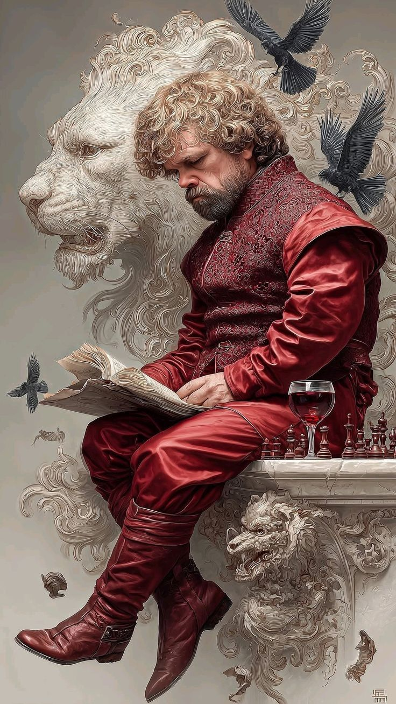

Casa Stark
Los Stark son una casa de muy antiguo linaje, descendientes de los Primeros Hombres.[28] Tras la construcción de Invernalia por Brandon el Constructor, este se ofreció a ayudar a la recién creada Guardia de la Noche para la edificación del gran Muro, la mayor estructura defensiva de todo Poniente, para separar a los pueblos salvajes o libres, del resto de los Siete Reinos. Tras repeler a los salvajes, Brandon decide establecer un nuevo linaje en el Norte y funda la familia Stark. Se dice que el Rey de la Noche, el Lord Comandante de la Guardia de la Noche nº13, fue un Stark, uno de entre sus muchos orígenes posibles. Los Stark ayudaron a repeler varias invasiones importantes de los salvajes, como cuando ellos y sus vasallos los Umber, derrotaron a los reyes-más-allá-del-Muro Gendel y Gorne, así como a Bael el Bardo. Durante varios milenios, los Stark no fueron los reyes indiscutibles en el Norte, derrotando varios reyes rivales, pero sus antagonistas principales, los Bolton de Fuerte Terror, juraron lealtad hace unos mil años, poniendo fin a sus costumbres de desollamiento. Mientras tanto, el rey Jon Stark expulsó a piratas del Cuchillo Blanco, y la Guarida del Lobo fue construida en su desembocadura. Esta fortaleza se concedió a menudo a los hijos y nietos del Rey en el Norte; su rama cadete, los Greystark, se extinguieron después de aliarse con los Bolton contra los Stark. La Guarida del Lobo fue finalmente concedida a los Manderly.
 








